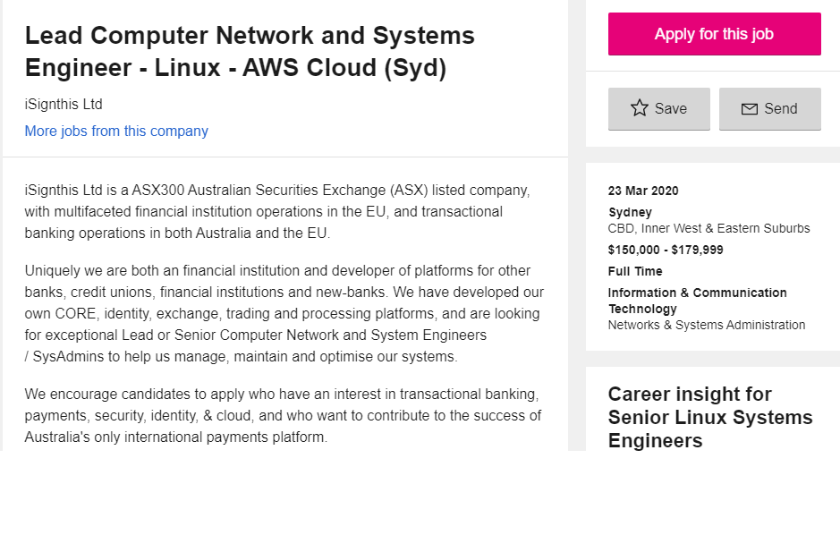
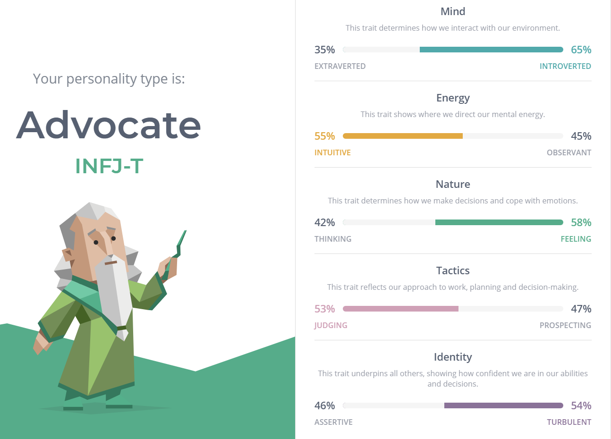
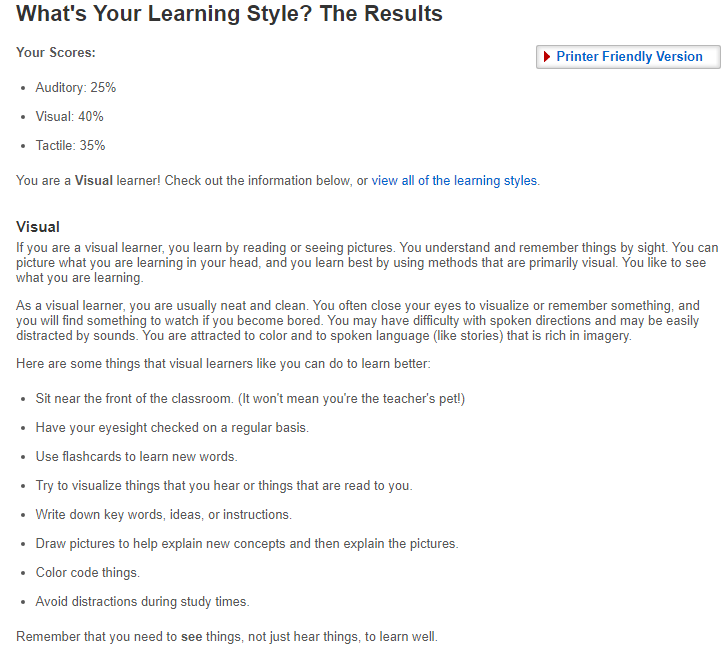
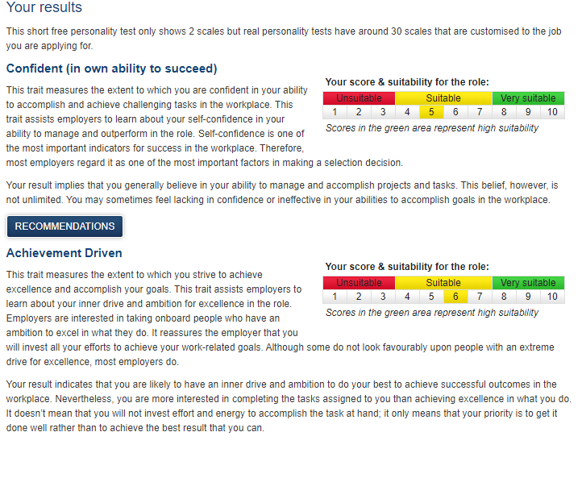

Introduction
Hello! My name is Adem Coskun, I am currently studying at RMIT University and my course is Bachelor of Information Technology
So for my short intro.... I am a 18 Year old student who can speak 2 languages being English and Turkish respectively and I have a huge interest in Computer Systems.
I am looking forward to finishing my 3 year period of education at university then looking for a stable job afterwards. With the help of my amazing teachers I doubt that would be an issue and I look forward to cooperating with my classmates and teachers.
My hobbies include playing video games in my spare time and looking after my many pets such as my cat who I have been looking after for 15 years now.
If you wish to contact me via school email, you can shoot me a message at s3844866@student.rmit.edu.au or during Wednsday's and Thursday's you may find me wandering around the City Campus.
My Background
Interest in IT
My interest in Information Technology sparked everysince I was a small child, I have always been fascinated by the capabilities of computers and the technology that goes into creating and the skills needed to operate systems therefore I have been interested in computer systems at a very young age (4~ to be specific).
I also have been around people who have been into Information Technology also so my interest for IT never gave out.
Therefore I chose RMIT University to study Bachelor of Information Technology as it is convenient for me to get here as means of transport.
I expect to learn alot about programming and information about Computer Systems alot during my study period here at RMIT Unviersity.
Education
I have completed my College education at Roxburgh College. But I have been living in Turkey for nearly 4 years 2014-2018 and alot of my education is split due to this. I hope to complete my University education at RMIT University succcessfully at the end of 2023.
Ideal Job
I would like to do either Computer Networking or becoming a system Engineer, here I have found a result similar to a job I would like to work in. The link can be found down below.
Lead Computer Network and Systems Engineer - Linux - Aws Cloud Being a leader at such a firm in a position of a lead Engineer would mean I have a big responsibility on my back, but if I have the skills to do so, I can lead the firm into a positive position to operate from. This makes it appealing for me as I always wanted to lead a Computer Network and to guide a business in its Computer sector therefore making it an interesting and appealing job for me.
This job has many requirements therefore I would need to take into consideration the core requirements below:
- 6-10 year experience in a Compter Network, System Administration or Networking role.
- Bachelor's degree in Computer Science or related field, or, industry based training with substantial experience in the areas below.
- Strong communication skills and ability to work cross-functionally. EU language skills desirable.
- Exposure to payments, banking or secure communications a plus. Debian/RedHat Linux
- Bitbucket Source Code Control
Ontop of this, I would need to also have a look at the Desirable Experiences below:
- Amazon Web Services configuration exposure
- Atlassian tools for automation
- Maria, MongoDB
- Redis, ActiveMQ
- Exposure to any of Monit, NewRelic, PagerDuty, CloudWatch
- Palo Alto Firewalls / Imperva WAF
- Bash/Python/Ruby or similar scripting technique experience
I am currently being exposed to the Amazon Web Services through the work I am doing at RMIT and currently what im studying to submit this very assignment, other then that, I would need to work on more of the requirements after I finish my study period here at RMIT in which I will hopefully achieve.
I hope to obtain the knowledge required for this job at RMIT University to be able to get a job at such a position and I believe it is possible, Since I have started new there is alot I still need to learn.
Profile
Myers-Briggs Test
Learning Style Test
Psychometric Test
I feel as if these tests are important as it can show me the behaviours in which I may have to improve upon therefore it shouldn't be taken too lightly a nd I should invest more time into my weaknesses.
These results may show me the problems I may have on my team therefore I should look into it further and fix my issues, I should immediatley change some of my patterns in how I operate to be in sync with those around me
I should take this into account when forming a team as some of my attributes may affect others in a negative manner and that would mean less productivity therefore I should make sure I fix my mistakes before forming a group, and even if i do form a group without fixing my mistakes. I should let the other people know about my problems and see if they can cooperate with it in place
Project Ideas
My main project idea would be to design a software application to expand onto the evergrowing new hardware developments seen in present day society. I would want to create software and manage the system to ensure that my software keeps up with the advancing hardware even into the future. Therefore creating an important software for important tasks whether it would be for scientific research or robotics or even financial purposes it would be important for me to create a software in which I would want to manage no matter the difficulty even though it may mean I require alot of work to be put in.
My motivation for wanting to create a project such as this came from my views on present day life and the rapid rate in which we are advancing our technological capabilities therefore i wanted to ensure that in the future people would have software developers to ensure the new advancements are as efficient as possible maximising our capabilities as people. As for all, if we did not work together as humans, society would not operate at all, Therefore people need to work for us to be able to sustain. I also see problems with our current day applications as they use alot of power and generate alot of heat for the hardware making it costly to operate and maintain therefore my checklist was also to ensure a fix for the heating issues seen in modern day hardware through the usage of needy applications.
This software applications main purpose is to be universal with all hardware and to ensure that it is compatable with any operating system, ontop of This the software should have the ability to easily be programmed to control heavy amounts of traffic in places such as warehouses, robotics, military applications, policing applications and large firms who require a piece of software which can succumb to their needs and be as efficient as possible. This software should have the ability to intake heavy loads and work under good conditions, some pieces of software in present day make computers alike heat up due to the heavy processing power which is required for the software to operate. My goal is to create a application which does not requrie powerful systems for it to operate which lowers the overall cost in cooling for the systems. The software is to be easy to use and operate in which anyone can learn which expands the usability and implies that more people can get jobs in operating this software for firms. Due to this accessability it would be a service available to any firm in need of a application which lowers the overall cost of their current systems by reducing costs in areas of current firms such as cooling for hardware. Cooling is important as many server warehouses rely on cooling for them to operate and store mass amounts of data, so if a new application was to have the ability to induce the amount of power required for the hardware to operate, it would dramatically lower the cost for cooling as the hardware would not overheat. This new software application would also have 2 important features I would like to implement, this being 2 new interfaces, one for a simplistic approach to the user and the options to choose another interface which is more advanced. This would make sure both advanced users and novices can work together at the same firm to ensure they are working at their capacity and maintaining the hardware via the new software application. It would be deployed at a low cost making nearly every firm pickup the new software making a bigger margin of products sold. A problem I see nowadays is people may have to rely on the help of others through tutorials and videos to learn how to use a piece of software, but my goal for this software is also to have the ability to have a built in index which is easy to access to make sure the user does not have to rely on anything Third-Party to be able to create and code what they want. This is important as people with small firms and homemade businesses may rely on themselves to code rather than creating further expidenture our of their own wealth as they would now have the ability to manage their hardware through a piece of software which is both cheap, less demanding on hardware and easy to use for clients and users. Overall the main goal of this software is to be cheap, accessible, open source, compatable and easy to use.
The application will be a open source product which is compatiable with nearly every operating system and must have the ability to connect to hardware which is modifiable making it an application every firm may require to connect to their systems. It will not require any other open source tools, hardware or software for it to operate as it would be an independent application which has the ability to house all those features to begin with. Just by the interface option of a simple design will allow almost any operator type ranging from a novice to an expert will be able to pickup and use the application easily so that they could do as they need for their own firms.
Obviously having some sort of experience in programming and computer systems would help drastically, but the idea of this application would be a simple and easy to learn app which guides the user through the built in help of the software at any step along the way making it easy for anyone to use, therefore making the skill requirement virtually zero. No other skills, software or hardware is required to use such an application therefore making it a good idea for a beginners choice to pickup and begin using it upon opening it. However, having experience in applications such as Visual Studio Code or Eclipse may be of major help as a starter for beginners to learn as this will help them drastically.
If the project is successfull, it wouldve ended up being a fully developed application for systems which is open source, easy to use, compatible with any operating system, low cost and very low demand in power making it a good choice for any firm or individual to use. It would solve the requirements for people in firms as now any user group ranging from a novice to a expert would be able to use due to the choices in interfaces and also the cost for cooling as computers will now not use as much power to operate as the software isnt as demanding.